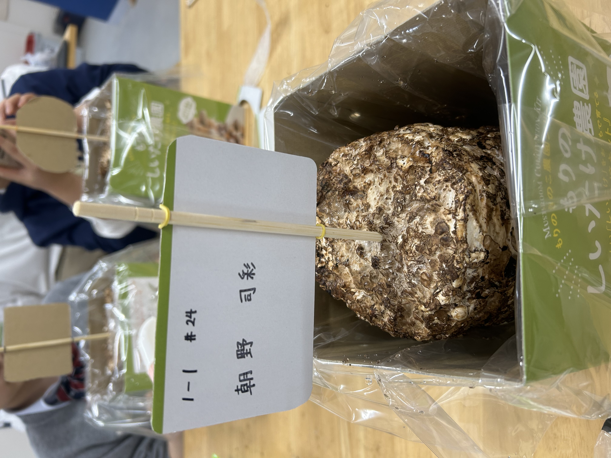
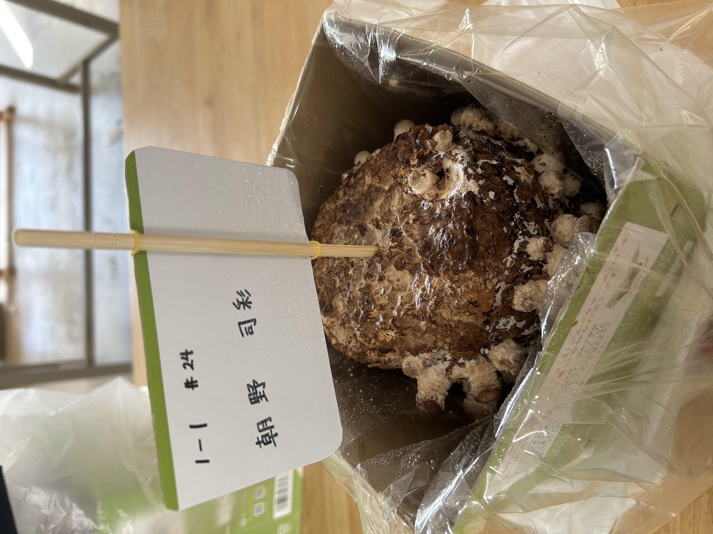
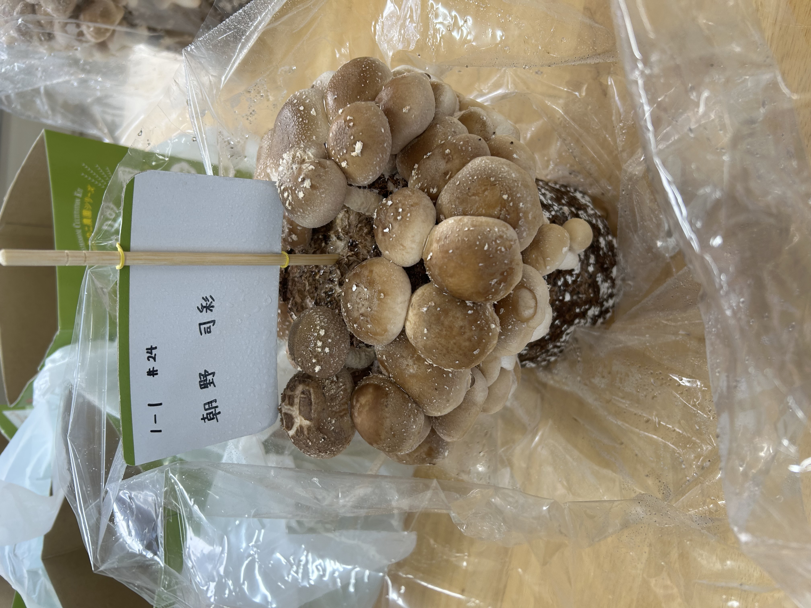
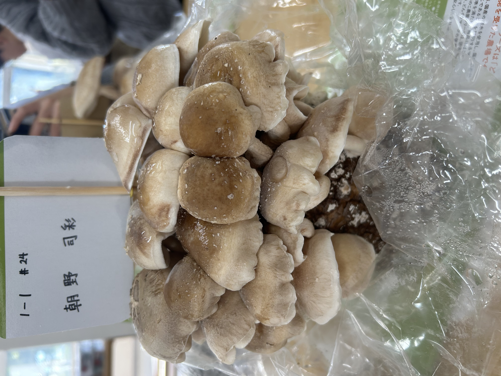
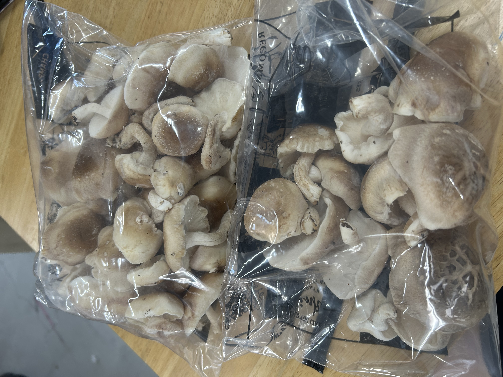
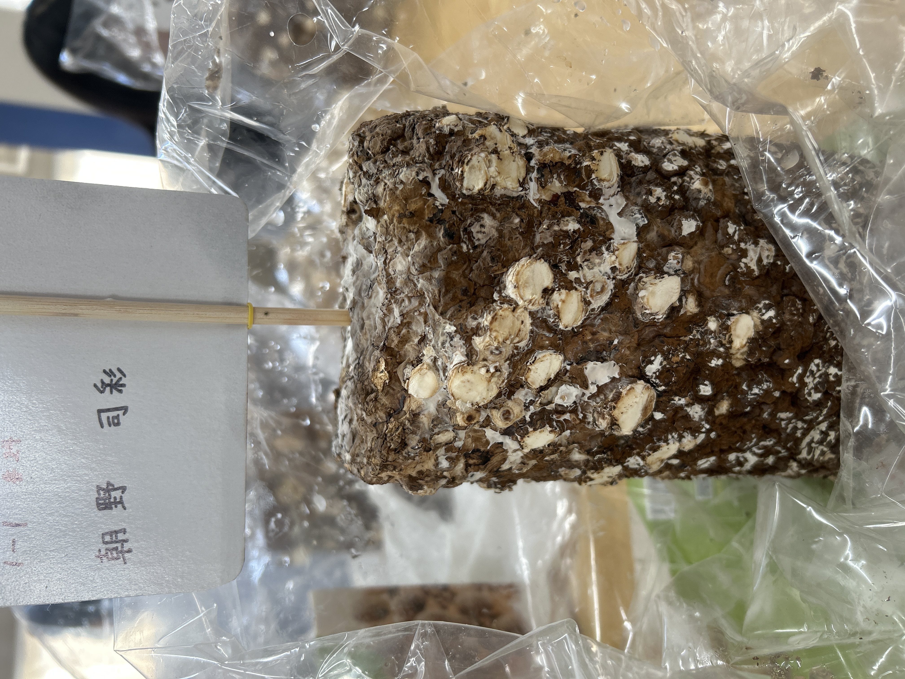
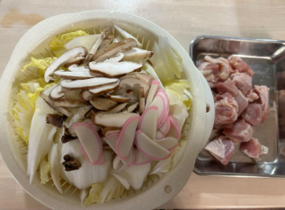
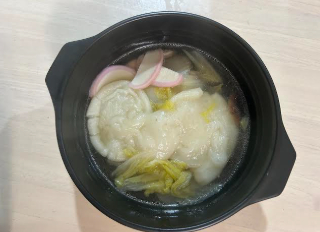

きのこの成長記録
きのこには2,3日に一回水をやりました。どのくらいできるか楽しみです。予想では家族（5人分）位あればいいかなと思います。
準備したもの
・しいたけ栽培キット
・洗濯バサミ
・大きめのハサミ
・霧吹き
初日

きのこの栽培を始めました。キットの袋を開けたときは結構きのこの匂いがしました。
2日後

2日後です。徐々に生えてきました。
さらに3日後

結構大きくなりました。収穫するにはまだ早そうです。
さらに2日後

前回から2日が経ちました。そろそろ収穫できそうです。

想像以上の量が取れました。これは5人分以上あります。

菌床を見たらどれだけ取れたのかわかりやすいです。きのこは約1週間でできました。
2回目のきのこ作りもやってみましたが、上手くきのこが生えてこず失敗してしまいました。
☆作ったきのこを調理する☆
私はきのこを使って「お雑煮」を作りました。
【材料（5人分）】
・餅 適宜
・白菜 1/4
・かまぼこ 1/2
・しいたけ（乾燥させて水に戻したもの） 3個
・鶏もも肉 １枚
・だし汁 1リットル
・塩 小さじ一杯
・料理酒 大さじ三杯
【食材の写真】

【作り方、手順】
①餅を焼きお椀に入れておく
②出汁をとる
③沸騰した出汁に鶏肉を入れあくをとる
④③に野菜とかまぼこをいれる
⑤一煮立ちしたら料理酒で味を整える
⑥鶏肉に火が通ったら餅の入ったお椀に注ぎ完成
【完成した料理の写真】

【作ってみた感想】
料理は細部までこだわらないと美味しいご飯が作れないので調味料などの厳密な部分を計るのが難しかったです。これまでは火を使った料理をあまりしたことなくて今回実際に火を使って少し緊張したけど、料理初心者のわりには結構いいお雑煮が作れたと思いました。自分で作ったやつも食べたら美味しくてまた作ったりして自分の料理の幅を広げていけたらいいなと思いました。